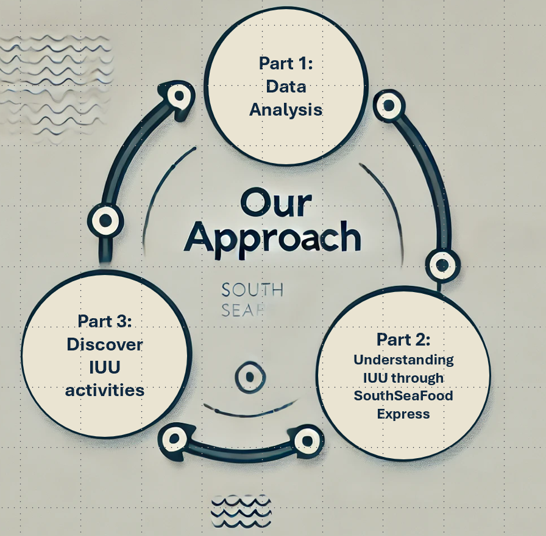

Approach
Three Parts to the Project
The team divided the project into three key parts:

Part 1 - Analysis of the Data
In the first part of the project, the team went through the dataset provided, which comprised two files:
geojson file of the locations in Oceanus
and a graph data, which covers Vessel Movement, Harbor Records, and Harbor Import Records.
For the nodes, we have:
| Data | Description | Remarks |
|---|---|---|
| Fish | 10 Species of Fish | Key fields are the:
|
| Location | Contains Point, City and Region | Contains the
|
| Delivery Report | 5307 Delivery Report | Contains the Also contains the qty by tons ( |
| Fishing Vessel | 178 Fishing Vessel | Contains the Other info includes: |
| Cargo Vessel | 100 Cargo Vessels | To explore given that these vessels can be used for transshipment or IUU activities. |
| Other Vessels | Such as Passenger, Research, Tour and Others | KIV - but dont think needed for our analysis |
And for the edges:
| Data | Description | Remarks |
|---|---|---|
| Harbor Reports | Contains information about the vessel docking at which harbor. There is a key column, but not sure what it means. Contains a few other columns with aphorism, holiday greeting etc but seems not impt for our analysis here. |
Key fields here are:
|
| Transaction | Information from OCEANS Each transaction has two rows - one connecting the transaction to the City, the other to the fish species. |
Key fields here are:
|
| Transponder Ping | Information from OVLS Contains information about the time of ping, dwell time, and location. |
Key fields here are:
|
Further data analysis done will be highlighted under the Data Analysis tab. Also, through the analysis, the team also tried to tag the Harbor Import Records to the vessels, and this analysis can be found under Matching Records.
Part 2 - Understanding IUU through SouthSeaFood Express
After we performed the data analysis, we will try to learn more about IUU through the activities of SouthSeaFood Express.
This include check the vessels under this company, looking at the paths in Oceanus, where they visited and stayed and what activities were suspicious.
An understanding of their activities would help us to identify other IUU activities, which leads us to the last part.
Part 3 - Discover IUU activities and Identify New Behaviours
With a better understanding of the IUU activities, we will go back to the data and try to filter out vessels or import records that are similar to the activities conducted by SouthSeaFood Express.
Thereafter, we will also compare the trends and activities - such as the dwell time in the Preserve areas, or any change in the paths of the vessel to try to identify new behaviours.